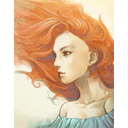

Forums galactiques > Assemblée Galactique : diplomatie officielle > Souffle d'Automne
Pages : 1
| Soda Respect diplomatique : 706  04/05 ETU 21:46 | Score : 10 Détails Encore une embardée.
Impossible de lire tranquillement. C'est au la énième fois que le vaisseau a une embardée. Comment, Ô grand dieu comment lire dans ces conditions. La porte du compartiment s'ouvrit presque en même temps qu'une nouvelle embardée secouait la nef. Le claquement du métal sur les murs fit sursauter le sombre personnage assis sur le sofa. Un homme en uniforme, se tenant à l'encadrement de la porte, tenta maladroitement de saluer son supérieur malgré le manque d'équilibre. Aucun insignes sur ses épaules indiquaient qu'il s'agissait d'une nouvelle recrue de 1ère classe. Le bleu de son uniforme indiquait, lui, que le jeune homme avait eut son affectation dans les services aériens. Il s'avança tant bien que mal vers le sofa. Celui qui l'occupait leva la tête et posa un regard sans expression vers son subordonné. Le commandant Soda, nouvel Empereur de Khatovar, claqua séchement son livre et le déposa sur une petite table en chêne. Dans le coin du compartiment, dissimulé derrière le dossier d'un fauteuil aussi noir que les cheveux de Soda, se tenait assis droit comme un i l' Abbé-Colonel Shiraku. Jetant un coup d'oeil craintif vers l'ecclésiastique, le jeune soldat salua le commandant Soda et prit la parole. Excellence, le pilote de la nef vous fait savoir, qu'après vérification des réacteurs par les droïdes machinistes, il est apparut une défaillance dans la propulsion hyperspatiale. -Autrement dit? -Les embardée sont dûes à cela. Et..hum...le rapport indique aussi que nous ne sommes pas en mesure d'assurer le restant du voyage dans ces conditions. Nous parcourons en ce moment le territoire de la Commandant Brise, nous pouvons leur demander de faire escale. Son profil n'indique pas d'hostilité quelconque. -Shiraku?" L'Abbé-Colonel répondit sans même tourner la tête. "Je me renseigne sur chaque territoire que nous traversons durant nos voyages. Brise est une jeune commandante, apparement très respectable, ayant bénéficier d'aide, entre autre, de l'émminent Nicanor de Rokha. Les mots clé étaient Ambitieuse, Ravissante, Prometteuse et Idéaliste. -Les droïdes ont mis "ravissante" comme mot clé? -Affirmatif. -Aha. Sacré technologie. C'est entendu soldat, dites au pilote d'entamer la procédure avec la tour de contrôle de nos probable hôtes. -Bien reçu, Excellence. -Cessez donc de m'appeller Excellence, soldat. Vous êtes peux être du même âge que moi, voir même plus vieux d'un an ou deux, alors cela me mets mal à l'aise. -Heu..Entendu, Exc...Entendu!" Le jeune soldat, rouge comme une pivoine, quitta le compartiment encore plus difficilement qu'à l'allée. A peine eut il disparut derrière la lourde porte métallique que Shiraku tourna son fauteuil et tendit un objet rond à Soda. Celui ci appuya sur l'unique bouton de l'objet qui se tenait juste au dessus d'une petite fente dans laquelle était introduite une disquette. Un hologramme s'afficha instantatément. Le visage d'une femme superbe apparut. Soda tourna la tête vers Shiraku. "C'est elle? -Commandant Brise. Mes sources sont infaillibles. Et puis elle n'a aucune raison de sa cacher, elle se montre à l'Assemblée régulièrement. Je l'ai déjà croisée. -A elle est donc reconnue à l'Assemblée? -Bien sur, membre de la NRE, si je ne me trompe pas. -Tout ce que je puis dire, c'est que tes droïdes ne se sont pas trompés. -Ah? -Oui, elle est effectivement ravissante... Ceci est un RP reservé à la commandante Brise et moi même, merci de ne pas intervenir. | ||
| Brise Respect diplomatique : 32  06/05 ETU 11:44 | Score : 5 Détails « Madame, une nef traverse en ce moment nos territoires, elle demande actuellement à se poser sur nos terres. Aussi une des personnes présentes dans le vaisseau souhaiterai vous voir, il dit s'appeler Soda et d'être de la « NRE ». Dois-je les accepter ou les refuser de notre territoire? »
« Il n'y a rien à craindre d'un membre de la NRE mon général, ils peuvent se poser, et amenez ledit commandant aux montagnes de Idunn, je l'y attendrai. Inutile de m'escorter et de positionner des gardes aux alentours, je serai en mesure de me débrouiller seule, merci. » « Bien, je contacte la tour de contrôle, elle fera se poser les vaisseaux sur Bora. J'escorterai le commandant jusqu'au sentier menant en haut de la montagne, je suppose qu'il pourra se débrouiller seul à partir de là, un seul petit kilomètre à marcher. Au pire s'il ne veut pas je le déposerai au bosquet. » Brise sourit, elle avait enfin de la visite d'autres commandants, ce qui était une chose rare, d'habitude elle restait seule et laissait le vent caresser son visage le soir venu, mais elle pourrait enfin partager ce moment de délice avec quelqu'un d'autre. Elle se leva après que le général de ses armées soit parti. Elle ouvrit son armoire à la recherche d'un vêtement plus adapté aux circonstances, une maigre robe bleu a moitié transparente et ouverte jusqu'au niveau des épaules aurait privilégié les regards indiscrets aux discutions amicales. Sa garde robe était en ordre, les vêtements étaient classés selon leur forme et leur couleur, elle cherchait quelque chose de sobre et de joli à la fois; son regard se posa sur une robe de couleur pourpre, fine mais ne laissant entrevoir rien, un parfait vêtement pour les invités. Elle n'allait quand même pas se présenter sans maquillage, son visage aurait semblé un peu pâle, elle sortit une petite trousse puis se ravisa, après tout il ne s'agissait que d'une visite de courtoisie et non pas d'un rendez-vous, se montrer tel quel ne l'aurait sûrement pas dérangé. Ses pieds nus arpentaient avec facilité le sentier rocheux de la montagne, ils semblaient habitués à faire cette marche, comme s'ils eut connu toutes les roches qui composaient le sentier. Le vent soufflait dans les branches des sapins, les faisant se courber dans un bruit de frottements. La soirée s'annonçait un peu venteuse, mais c'est ce qui donnait du charme à cet endroit; lorsque l'on s'asseyait au bord de la falaise, pieds nus, avec le vent qui s'abattait sur les visages, regardant au loin se coucher le soleil dans une pâle lueur orangée et rougeâtre. Un petit bosquet de fleurs immaculées semblait l'attendre, remuant leur fleur grâce au vent lorsque Brise eut atteint le sommet, sereine et souriante. Elle s'assit sur le tronc d'un arbre mort qui était allongé sur le sol en attendant son hôte. Privé, merci de ne pas intervenir. | ||
| Soda Respect diplomatique : 706 08/05 ETU 21:23 | Score : 6 Détails Un léger vent balayait l'immense piste d'atterrissage du spatioport.
La grande étendue plane de béton était déserte. A plusieurs centaine de mètre de là des hangars entouraient une gigantesque tour de contrôle. Une base plutôt imposante pour un petit fief reculé de la capitale planètaire. Bien que colossale, la Nef personnelle du nouvel Empereur de Khatovar perdait de son superbe seule au milieu de la piste. Les portes s'ouvrirent dans un échappement d'air comprimé, puis l'escalier se déroula vers la surface. Ce fut d'abord Métatron qui sortit de la nef. Pas d'escalier pour lui. Il déploya ses ailes angéliques d'un noir de jais pour s'envoler vers le sol. Tout dans l'intox. Soda aimait impressioner avec son fidèle Ange Gardien. Soda parut à son tour, Shiraku restant dans la nef pour éviter des déplacements innoportuns à sa prothèse. Soda, toujours à son habitude dans ce genre de visite, était vêtu de son uniforme des plus sobre, ainsi que de sa cape noire aux reflets bleux. Ses longs cheveux aussi sombres que son uniforme encadraient son visage fait entre autre de deux immense yeux bleux dont il était fier. Un homme en uniforme l'attendait, campé aux côtés d'un véhicule antigrav. Soda lui tendit la main. L'autre la serra, surpris de cette non-importance des protocoles concernant le rapport supérieurs à subordonnés. Même en qualité d'invité, Soda restait un Empereur, et l'homme en uniforme un Soldat. "Enchanté. Je suis Soda, simplement Soda. Mes hommes et moi vous remercions grandement de bien vouloir nous recevoir. Vous êtes? -Peu importe, l'important est que vous rejoignez ma maîtresse, l'honorable Brise. Je vais vous y conduire, c'est à elle que s'adresse vos remerciements. -Ah?! Bien, heu...alors allons-y!" Perplexe, Soda grimpa dans l'antigrav biplace. Son accompagnateur prit les commandes et fonça à travers la piste en direction des montagnes avoisinant la Base. Ils s'arrêtèrent au sommet de l'une d'elle, puis l'homme en uniforme appuya sur un bouton, inversant visiblement la trajectoire des réacteurs. Ils purent bientôt grimper la montagne, et le conducteur déposa Soda en haut de la montagne. "Vous voilà aux montagnes de Ldunn. Suivez ce sentier, un kilomètre et vous arriverez à destination. Je vous laisse l'antigrav pour maîtresse Brise et vous même. Mes respect, Empereur." Décidémment bien protocolaire, cet homme mettait mal à l'aise Soda. Ce dernier haussa les épaules puis suivit les intructions de l'homme. Un kilomètre plus loin il vis enfin la commandante Brise. Assise sous contre un arbre et vêtue d'une fine robe pourpre, elle observait en souriant un bosquet de fleurs. "Et bien, les droïdes ne s'étaient pas trompés, et l'hologramme était une pâle réplique de la réalité. Cette femme est absolument ravissante. Hum hum, sans doute vaut mieux t-il que je fasse attention à mon comportement, ce n'est pas un rendez vous galant. Je serais fin si je devais quitter la planète pour avoir tentez de séduire leur chef! Shiraku me tuerait!!" Il s'approcha de l'arbre sentit la caresse du vent sur son visage. Brise regardait attentivement une fleur perdre ses pétales l'une après l'autre, du fait du vent. Soda se posta là, à quelques mètres, respectant le momen de contemplation de son hôte. Il fut surpris quand elle tourna vers lui son visage délicat. "Charmant endroit n'est ce pas?" | ||
| Brise Respect diplomatique : 32 12/05 ETU 10:11 | Score : 9 Détails « Cet endroit a été le berceau de mon enfance. Je me souvenais des jours heureux lorsque chaque après-midi en sortant de l'école je me hâtais vers le sommet de cette falaise pour admirer se coucher le soleil, il m'arrivait des fois de m'endormir ici même. Le vent berçait ma nuit, les arbres me servaient de couverture... Vous est-il déjà arrivé de dormir sous la lune, sans tente, ni sac de couchage, en parfaite harmonie avec la nature? »
Brise rendit compte que son invité devait être mal à l'aise debout ainsi. Elle lui proposa de venir s'asseoir près d'elle pour qu'il n'ait pas à fatiguer ses jambes. Elle semblait ne pas être effrayée des étrangers, pourtant beaucoup de femmes aujourd'hui n'osaient plus sortir de chez elles, et à juste raison. Brise pourtant semblait différente, elle aimait être avec des gens, même si un jour cela risquait de la perdre. « Au fait je me nomme Brise. Mais vous devez probablement déjà la savoir. Juste par curiosité, pourquoi vous êtes vous posé ici? Pour une simple raison de courtoisie ou pour une raison bien particulière? » Le vent semblait s'écraser sur les montagnes dans un sifflement glacé, l'air venait ensuite caresser la falaise pour repartir vers le loin. Sa planète avait la particularité d'être montagneuse, ce qui rendait le vent encore plus beau. Des paysages élevés et baignés par une douce bourrasque de vent. De là où elle était assise, on aurait pu penser qu'elle s'asseyait au sommet du monde, dans sa solitude, guettant ce qui se passait en bas, et au dessus d'elle le paradis, couvert par d'énormes nuages. Il y avait un certain jeu de lumière, qui faisait ses cheveux paraître blonds lorsque le soleil rendait les nuages oranges. Brise tenta de lui sourire, le vent faisait vaciller ses cheveux, et ceux-ci entraient dans sa bouche par moments. Elle avait un visage calme et serein, la nature faisait d'elle une belle femme, mais dans la ville elle n'était qu'une de ces rousses qui n'ont aucun charme car elles ont une peau trop blanche. Brise n'attendait pas de réelles réponses de Soda, elle espérait simplement que celui-ci était venu dans un but pacifique, non pas pour sonder sa planète et ensuite l'attaquer. Cependant elle semblait lui faire déjà confiance, il n'avait pas l'air d'être une mauvaise personne, ses yeux étaient emplis d'amour et de joie à donner, ses lèves n'étaient pas crispés, démontrant un certain agacement ou un remord chez lui. Soudain le vent se brisa violemment sur la façade de la falaise, ce qui fit Brise perdre l'équilibre et la mis dans une situation périlleuse. Elle s'était accroché au rebord de la falaise, qui pouvait céder à n'importe quel instant, et si elle lâchait prise elle allait tomber et mourir. Elle cria, bien que son cri fut étoffé par le vent, elle semblait crier dans le vide, et que personne ne l'entendrait. Elle espérait que Soda l'aurait sauvé, qu'il allait venir tel un preux chevalier, l'attraper la main et la sortir de là. Elle voulait encore vivre un peu. | ||
| Soda Respect diplomatique : 706 12/05 ETU 20:44 | Score : 6 Détails La rafale de vent secoua le visage de Soda.
Il buvait les paroles de son hôte, examinant sa silhouette fine et élancée. Une femme, une charmante femme. Pas une fille, une dame. L'adjectif qui convenait pour la décrire était "Belle", et surtout pas le mot "Jolie", mais bien le mot "Belle". D'un revers de la main, il repoussa une méche de ses longs cheveux noirs pour continuer d'admirer la délicieuse maîtresse des lieux. Il eut le souffle coupé. Elle avait chuté. Un cri courut dans le vent. Gardant son sang froid, il fut debout en une fraction de seconde. Soda était né en Khatovar. La culture liée à la Compagnie Noire faisait de lui un redoutable combattant, et sa force résidait dans sa vitesse et son agilité. Aussi remercia-t'il son père pour lui avoir appris tout cela. Il se rua au bord de la falaise. Brise criait. Un faible son lui parvenait, sa voix étouffée par un vent qui hurlait. La tête froide, Soda réfléchit du mieux qu'il put. "Elle est trop bas pour qu'elle puissa attraper mon bras. MAudit vent!" Il jeta des coups d'oeil autour de lui pour trouver une solution. Rageant, il finit par ôter sa cape de ses épaules, l'enroula d'un coup de poignet et la jeta dans le vide. Des larmes coulaient sur les joues de Brise. Elle devait être à bout de force. La cape effleura ses mains crispés sur le bord de la falaise. Elle lâcha prise. Une seule main parvint à saisir la cape. Aussitôt Soda tira. Petit à petit, Brise put s'accrocher à la cape avec ses deux mains tandis que son invité la hissait vers lui. Bientôt tout fut fini. Le calme revint, le coeur de Soda cessa de battre la chamade. Brise sanglotait dans ses bras, terrorisée. Sa robe était déchirée, dévoilant ses longues jambes fines et délicates. Un spectacle que Soda aurait certainement apprécié en tout autre situation. Il caressa ses cheveux on lui susurrant des mots rassurants. Brise se calma étonnament vite. Une femme forte,à n'en pas douter. Reniflant, elle se leva, ressera sa robe pour cacher ses superbes jambes. "Et bien, on peut dire que vous portez bien votre nom, Brise. Le vent fait partie intégrante de votre domaine. Un peu trop même." La tentative de Soda de rendre l'atmosphère aussi agréable qu'avant l'incident réussi partiellement. Brise esquissa un léger sourire éphémère. Elle se rassit. Inspirant longuement, elle renifla un grand coup, sécha ses yeux et relacha son souffle. Elle tourna un visage radieux à Soda. Cette femme était décidément surprenante. Pas une trace de l'incident sur son visage. "Je vous doit une vie, commandant. Je ne sais comment vous remercier. Restez ici autant que vous le souhaitez. -Vous ne me devez rien. Disons que nous sommes quitte. J'étais en difficulté dans l'espace. Vous m'avez tendu la main, je me suis contenté de vous tendre ma cape. Elle éclata de rire. -Pour en revenir à ce soleil couchant, je le trouve superbe! LE dernier que j'ai eut le loisir d'apprécier, j'étais en compagnie de mon père adoptif. Il m'a alors dit que c'était un endroit parfait pour y emmener une ravissante jeune fille. Je n'aurai alors jamais pensé qu'une ravissante dame m'emmenèrait, moi, voir un soleil se coucher. J'en déduis que vous me trouvez ravissant? Ou alors suis-je un peu prétentieux? Soda sourit chaleureusement à Brise qui rougit. Il resta dans l'expectative d'une réponse... |
Pages : 1
Forums galactiques > Assemblée Galactique : diplomatie officielle > Souffle d'Automne